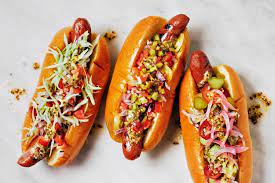

Hot Dogs

Ingredients (4 servings)
- 4 beef or pork hot dog sausages
- 4 hot dog buns
- 1/2 cup diced onions
- 1/2 cup diced tomatoes
- 1/4 cup chopped pickles
- 1/4 cup mustard
- 1/4 cup ketchup
- 4 slices of cheddar or American cheese (optional)
- Relish, sauerkraut, or other toppings of your choice
- Salt and pepper to taste
Preparation
Step 1
- Preheat a grill or grill pan over medium-high heat.
Step 2
- Grill the hot dog sausages, turning occasionally, until they are heated through and have grill marks (usually about 5-7 minutes).
Step 3
- While the sausages are grilling, lightly toast the hot dog buns on the grill or in a toaster.
Step 4
- Once the sausages are done, place each one in a bun.
Step 5
- Drizzle mustard and ketchup over the sausages. Add diced onions, diced tomatoes, chopped pickles, and any other desired toppings.
Step 6
- If you prefer, place a slice of cheese over the sausages and toppings.
Step 7
- Season with salt and pepper to taste.
Step 8
- Serve the hot dogs immediately with additional condiments and sides if desired.
Step 9
- Enjoy your delicious homemade Hot Dogs!